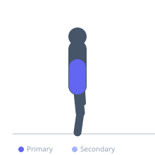

Exercise guide / Cat-Cow
Cat-Cow
Cat-cow is a dynamic spinal mobilization exercise performed on hands and knees that alternates between full spinal flexion (cat) and full spinal extension (cow). Moving through the full range of sagittal plane spinal motion warms up the intervertebral joints and muscles, promotes synovial fluid circulation, and is widely used as a preparatory movement before training or as morning mobility work. It is suitable for virtually all populations.
Primary muscles
erector spinae
rectus abdominis
Secondary muscles
transverse abdominis
internal oblique
Stabilizers
rhomboid major
Equipment
No Equipment (Bodyweight)


Starting position
- Begin in a tabletop position on hands and knees. Wrists directly under shoulders, knees directly under hips. Spine neutral.
Setup
- Use a mat for comfort on the knees and wrists.
Steps
- Step 1: Begin in a neutral tabletop with spine parallel to the floor.
- Step 2: CAT — Exhale and round the spine toward the ceiling, tucking the tailbone under and dropping the head. Hold 2 seconds.
- Step 3: Return slowly through neutral.
- Step 4: COW — Inhale and allow the spine to extend, letting the belly drop toward the floor while lifting the head and tailbone. Hold 2 seconds.
- Step 5: Return to neutral. Repeat the cycle 10–15 times.
Coaching cues
- Start from the tailbone — curl the pelvis first, then move segment by segment up the spine
- In cow, imagine filling your belly with air as you drop it toward the floor
- In cat, press the floor away with your hands to maximize the spinal flexion
Breathing
- Exhale into the cat (flexion) position. Inhale into the cow (extension) position. Let the breath drive the movement.
Range of motion
- Aim for full spinal flexion in cat and full extension in cow. Move through as much range as is comfortable.
Tempo
- 2–3 seconds per position, 10–15 cycles.
Common mistakes
- Only moving in the lumbar spine — try to distribute the motion through the thoracic and cervical spine as well
- Moving too quickly — this is a slow, mindful mobilization
- Not reaching full range in both directions
Safety
- If wrist discomfort occurs, make fists to reduce wrist extension load
- Those with severe spinal pathology should consult a clinician before performing flexion-based movements
Training
- mobility: 10–15 reps
- mobility: 1–3 sets
- Rest: {'mobility': 15}